| JETT | |||
 |
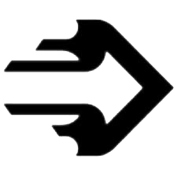 | 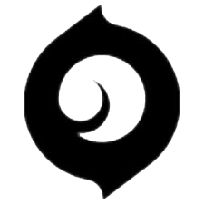 |  |
| Q - CORRENTE ASCENDENTE | E - BRISA DE IMPULSO | C - ERUPÇÃO DAS BRUMAS | X - TORMENTA DE AÇO |
| INSTANTANEAMENTE impele Jett bem alto no ar. | INSTANTANEAMENTE impele Jett na direção atual de movimento dela. Se estiver parada, Jett será impelida para a frente. | Lança INSTANTANEAMENTE um projétil que se expande numa breve nuvem que obscurece a visão ao bater numa superfície. SEGURE o botão da habilidade para curvar a fumaça na direção da sua mira. | EQUIPE um conjunto de facas altamente precisas que são recarregadas ao matar um oponente. DISPARE para lançar uma única faca contra o alvo. Use o DISPARO ALTERNATIVO para jogar todas as facas restantes contra o alvo. |

| REYNA | |||
| 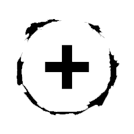 | 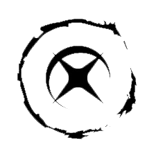 | 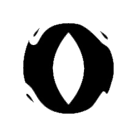 | 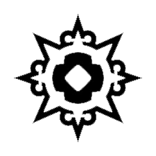 |
| Q - DEVORAR | E - DISPENSAR | C - OLHAR VORAZ | X - IMPERATRIZ |
| Inimigos abatidos por Reyna deixam Orbes de Alma que duram 3s. INSTANTANEAMENTE consome um Orbe de Alma próximo, curando-se de forma rápida por um curto período. A quantidade de Vida concedida por esta habilidade que ultrapassar 100 decairá ao longo do tempo. Se a habilidade IMPERATRIZ estiver ativa, esta habilidade será conjurada automaticamente e não consumirá o orbe. | INSTANTANEAMENTE consome um Orbe de Alma próximo, ficando inatingível por um curto período. Também se torna invisível se a habilidade IMPERATRIZ estiver ativa. | EQUIPE um olho etéreo e destrutível. ATIVE para lançá-lo adiante a uma curta distância. O olho deixará com visão turva todos os inimigos que olharem para ele. | INSTANTANEAMENTE entra em estado de frenesi, aumentando de forma drástica as velocidades de disparo, equipamento e recarga de munição. Renova a duração ao fazer um abate. |
| RAZE | |||
| 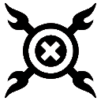 | |||
| Q - CARGA DE EXPLOSIVOS | E - CARTUCHOS DE TINTA | C - BUMBA | X - ESTRAGA-PRAZERES |
| INSTANTANEAMENTE joga uma Carga de Explosivos que gruda em superfícies. REUSE a habilidade depois de instalar para detonar, causando dano e movendo tudo que for atingido. Raze não sofre dano ao ser atingida pelo efeito desta habilidade, mas ainda pode sofrer dano de queda se for arremessada para longe. | EQUIPE uma granada múltipla. DISPARE para jogar a granada, que causa dano e cria submunições, cada uma causando dano a qualquer um que estiver no alcance. | EQUIPE um Bumba. DISPARE para lançar o robô, que avança em linha reta no chão, ricocheteando nas paredes. O Bumba trava ao detectar inimigos no cone frontal e os persegue, explodindo e causando muito dano se alcançá-los. | EQUIPE um lança-mísseis. DISPARE um foguete que causa dano devastador em área ao fazer contato com qualquer coisa. |
| NEON | |||
| 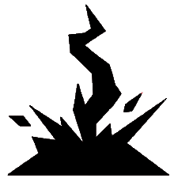 | 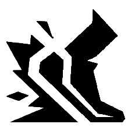 | 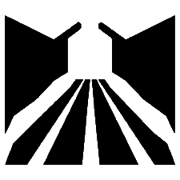 | 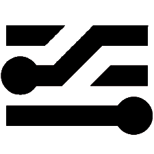 |
| Q - RICOCHETE ELÉTRICO | E - EQUIPAMENTO VOLTAICO | C - VIA EXPRESSA | X - SOBRECARGA |
| INSTANTANEAMENTE arremessa um raio de energia que ricocheteia uma vez. Ao atingir cada superfície, o raio eletrifica o chão abaixo dele com uma explosão. | INSTANTANEAMENTE canaliza o poder de Neon para receber velocidade aumentada. Ao atingir a carga máxima, use o DISPARO ALTERNATIVO para acionar um deslize elétrico. O carregamento é redefinido a cada dois abates. | DISPARE duas linhas de energia no chão à frente. As linhas se estendem por uma curta distância ou até atingirem uma superfície. Elas se tornam paredes de eletricidade estática que bloqueiam a visão e causam dano aos inimigos que as atravessarem. | Neon libera todo o seu poder e velocidade por um curto período. DISPARE para canalizar isso em um raio elétrico mortal com alta precisão de movimento. A duração é redefinida com cada abate. |
| PHOENIX | |||
| 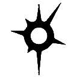 | 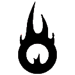 | 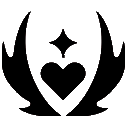 | |
| Q - BOLA CURVA | E - MÃOS QUENTES | C - LABAREDA | X - RENASCIMENTO |
| EQUIPE um orbe de chamas que avança em curva e detona pouco após o lançamento. DISPARE para curvá-lo para a esquerda, detonando e cegando qualquer jogador que vir o orbe. Use o DISPARO ALTERNATIVO para curvá-lo para a direita. | EQUIPE uma bola de fogo. DISPARE para jogar a bola de fogo, que explode após um intervalo ou ao atingir o chão, criando uma zona duradoura de fogo que causa dano aos inimigos. | EQUIPE uma parede de fogo. DISPARE para criar uma linha de chamas que avança, gerando uma parede de fogo que bloqueia a visão e causa dano a jogadores que passarem por ela. SEGURE O DISPARO para curvá-la na direção da mira. | INSTANTANEAMENTE coloca um marcador na localização de Phoenix. Com a habilidade ativa, morrer ou deixar o tempo acabar encerrarão a habilidade e trarão Phoenix de volta ao local marcado com Vida completa. |
| YORU | |||
| 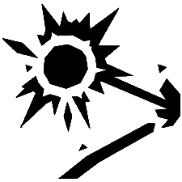 | 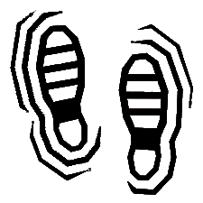 | 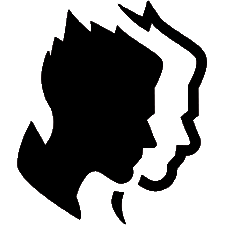 | 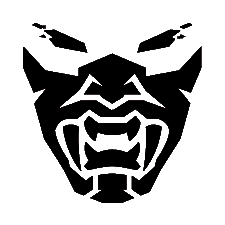 |
| Q: PONTO CEGO | E: PASSAGEM DIMENSIONAL | C: DISTRAÇÃO | X: ESPIONAGEM DIMENSIONAL |
| EQUIPE para arrancar um fragmento dimensional instável da realidade. DISPARE para lançar o fragmento, ativando um clarão que se dissipa ao atingir uma superfície sólida. | EQUIPE um fluxo dimensional. DISPARE para lançá-lo à frente. Use o MODO SECUNDÁRIO para posicionar um fluxo imóvel. ATIVE para se teleportar até ele. USE para acionar um teleporte falso. | EQUIPE um eco dimensional que se transforma em uma cópia do Yoru quando ativado. DISPARE para ativar a cópia e fazê-la avançar. Use o MODO SECUNDÁRIO para posicionar um eco inativo. USE para transformar o eco inativo em uma cópia e fazê-la avançar. As cópias explodem e cegam os inimigos quando destruídas por eles. | EQUIPE uma máscara para olhar por entre as dimensões. DISPARE para entrar na dimensão do Yoru, onde você não poderá ser afetado nem visto pelos inimigos lá fora. |